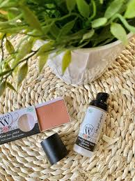
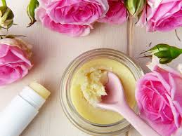

HISTORIQUE ET PRESENTATION
Notre entreprise a été créée en Janvier 2020.
Le siège se trouve à Dakar Sandaga mais nous avons différentes boutiques d'exposition à Sacré Coeur, HLM, Point E, Saint-Louis, Thiés, Kaolack, Louga, Kédougou, Zinguichor.
Nous fabriquons et transformons des produits bio à base de produits locaux et naturels.
Nous produisons des produits naturels pour des peaux sensibles à base de plantes naturelles.
Nous avons une gamme de produits capillaires composée d’huiles essentielles et de masques protectrices,
de soins pour réparer et protéger les peaux sensibles, des parfums doux et légers pour toute la famille et des produits de maquillage entièrement bio.


